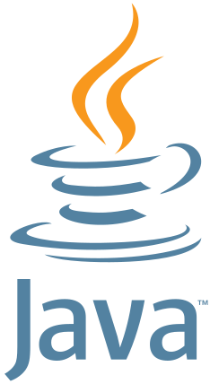

Java is a general-purpose modern programming language initially developed by Sun Microsystems, and currently owned by Oracle Corporation. The key feature of the language is platform independence: it means that the same Java program can be run on multiple platforms without any changes! This principle is also known as "write once, run anywhere" (or WORA).
Java has been one of the most popular programming languages for many years. It has earned the top position in the TIOBE index (a programming language popularity index). This language is used by a huge community of developers around the world! If you have a problem, you can always ask other developers or find a suitable answer online.
Java is used in our Android smartphones, the financial services industry, telecommunications, embedded systems, and in many other areas. Medical applications use it to store patient data, computer games, such as Minecraft, are created using Java; development tools like IntelliJ IDEA and Eclipse wouldn't exist without it.
The Java language project was initiated in 1991 by James Gosling and his colleagues. In the beginning, the language was called "Oak." Later the project was renamed "Java" as a reference to Java coffee. For this reason, the language's logo is a cup of coffee.
The logo of the Java language
Sun Microsystems released Java 1.0 in 1996. After that, new versions were released every 1 to 3 years. Since Java 9, released in 2017, new versions have been released every 6 months. You can read more about its history and find the most recent version here.
As we've mentioned before, the most important feature of Java is platform independence.
Another important feature is a simple and clear syntax. Many elements of the language are easy to read and are widely used in other programming languages such as C/C++, C#, JavaScript, and Go.
If you have ever written programs in C/C++, you know that manual memory cleaning can lead to bugs in the code. Fortunately, Java has a garbage collector that automatically cleans memory from unused objects during runtime.
It is also important to note that Java supports multiple programming paradigms; you will get to know more about them in future topics. Java is primarily an imperative language based on the object-oriented concept: almost every part of a program is an object. Therefore, a program itself can be considered as a set of interacting objects. Also, it partially supports modern programming paradigms such as generic programming, concurrent programming, functional programming, and some others.
In conclusion, Java is a modern and popular programming language that can be successfully used in almost all domains.